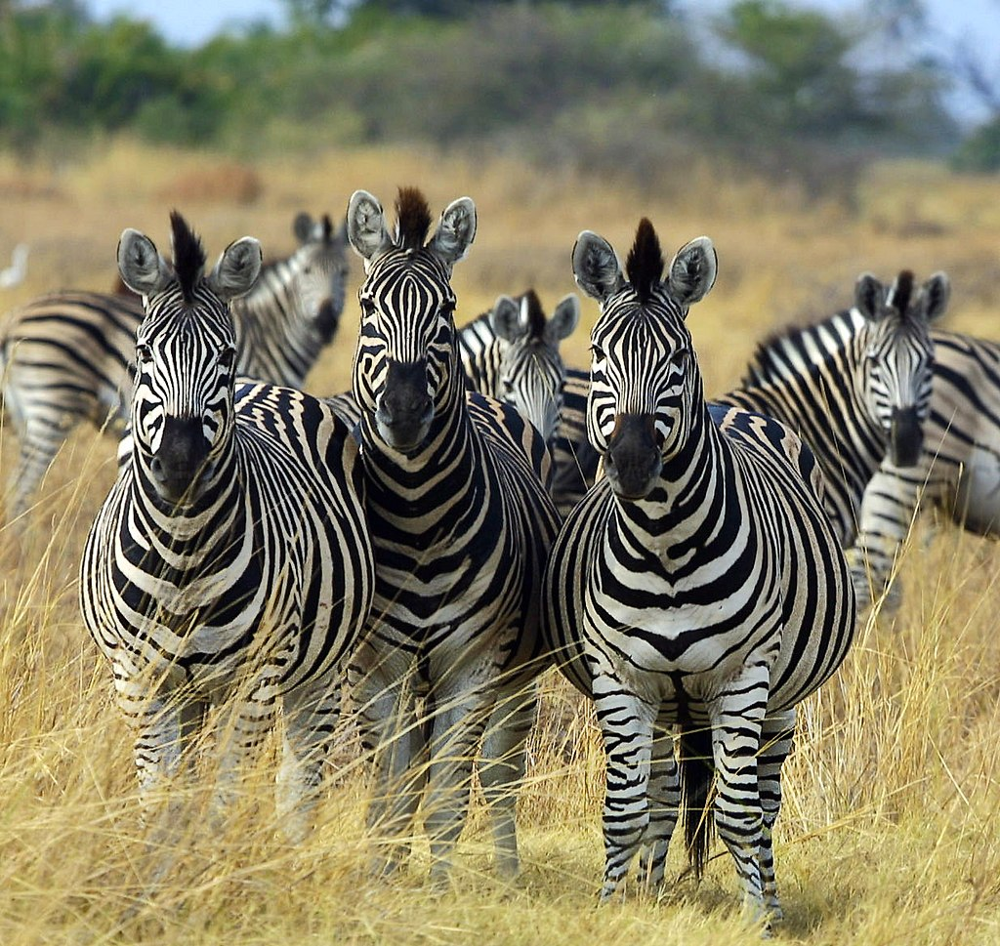

<!DOCTYPE html>
<html lang="en">
<head>
    <meta charset="UTF-8">
    <meta http-equiv="X-UA-Compatible" content="IE=edge">
    <meta name="viewport" content="width=device-width, initial-scale=1.0">
    <title>3 animal info</title>
    <link rel="shortcut icon" href="lion.jpg" type="image/x-icon">
</head>
<body>
    <style>
            #qe{
                background-color: black;
                color: white;
                text-align: center;
                height: 60px;
            }
            #lj{
                color:orange;
                text-align: center;
            }
            #last{
                border:1px solid blue;
                padding: 50px 80px ;
                margin:10px;
                font-weight:900 ;
                border-width: 10px;
            
            }
            #los{
                color: rgb(255, 72, 0);
            }
            #jos{
                color: blue;
            }
            #kos{
                color: crimson;
            }
            #lis{
                color: darkseagreen;
            }
            .tu{
                color: green;
            }

    </style>
</body>
</html>
<h1 id="qe">3 Animal Info</h1>
<h2 id="lj">Panda</h2>
<div id="last">
    <p><li id="los">The giant panda (Ailuropoda melanoleuca; Chinese:大熊猫; pinyin: dàxióngmāo),[5] also known as the panda bear (or simply the panda), is a bear[6] native to South Central China.[1] It is characterised by its bold black-and-white coat and rotund body. The name "giant panda" is sometimes used to distinguish it from the red panda, a neighboring musteloid. Though it belongs to the order Carnivora, the giant panda is a folivore, with bamboo shoots and leaves making up more than 99% of its diet.[7] Giant pandas in the wild will occasionally eat other grasses, wild tubers, or even meat in the form of birds, rodents, or carrion. In captivity, they may receive honey, eggs, fish, yams, shrub leaves, oranges, or bananas along with specially prepared food.[8][9]

            The giant panda lives in a few mountain ranges in central China, mainly in Sichuan, but also in neighbouring Shaanxi and Gansu.[10] As a result of farming, deforestation, and other development, the giant panda has been driven out of the lowland areas where it once lived, and it is a conservation-reliant vulnerable species.[11][12] A 2007 report showed 239 pandas living in captivity inside China and another 27 outside the country.[13] As of December 2014, 49 giant pandas lived in captivity outside China, living in 18 zoos in 13 different countries.[14] Wild population estimates vary; one estimate shows that there are about 1,590 individuals living in the wild,[13] while a 2006 study via DNA analysis estimated that this figure could be as high as 2,000 to 3,000.[15] Some reports also show that the number of giant pandas in the wild is on the rise.[16] In March 2015, conservation news site Mongabay stated that the wild giant panda population had increased by 268, or 16.8%, to 1,864.[17] In 2016, the IUCN reclassified the species from "endangered" to "vulnerable",[12] affirming decade-long efforts to save the panda. In July 2021, Chinese authorities also reclassified the giant panda as vulnerable rather than endangered.[18]
            
            While the dragon has often served as China's national symbol, internationally the giant panda has often filled this role. As such, it is becoming widely used within China in international contexts, for example, appearing since 1982 on gold panda bullion coins and as one of the five Fuwa mascots of the Beijing. </li></p> 
            <p><li id="jos">Etymology :<br>
                The word panda was borrowed into English from French, but no conclusive explanation of the origin of the French word panda has been found.[24] The closest candidate is the Nepali word ponya, possibly referring to the adapted wrist bone of the red panda, which is native to Nepal. The Western world originally applied this name to the red panda.
                
                
                Panda cubs
                In many older sources, the name "panda" or "common panda" refers to the lesser-known red panda,[25] thus necessitating the inclusion of "giant" and "lesser/red" prefixes in front of the names. Even in 2013, the Encyclopædia Britannica still used "giant panda" or "panda bear" for the bear,[26] and simply "panda" for the red panda,[27] despite the popular usage of the word "panda" to refer to giant pandas.
                
                Since the earliest collection of Chinese writings, the Chinese language has given the bear 20 different names, such as huāxióng (花熊 "spotted bear") and zhúxióng (竹熊 "bamboo bear").[28] The most popular names in China today are dàxióngmāo (大熊貓 literally "giant bear cat"), or simply xióngmāo (熊貓 "bear cat"). The name xióngmāo (熊貓 "bear cat") was originally used to describe the red panda (Ailurus fulgens), but since the giant panda was thought to be closely related to the red panda, dàxióngmāo (大熊貓) was named relatively.[28]
                
                In Taiwan, another popular name for panda is the inverted dàmāoxióng (大貓熊 "giant cat bear"), though many encyclopediae and dictionaries in Taiwan still use the "bear cat" form as the correct name. Some linguists argue, in this construction, "bear" instead of "cat" is the base noun, making this name more grammatically and logically correct, which may have led to the popular choice despite official writings.[28] This name did not gain its popularity until 1988, when a private zoo in Tainan painted a sun bear black and white and created the Tainan fake panda incident.[29][30]</li></p>
               <p> <li id="kos">Subspecies</li> <br></p>

                  <p id="lis">  The Qinling panda has a light brown and white pattern
                    Two subspecies of giant panda have been recognized on the basis of distinct cranial measurements, colour patterns, and population genetics.[31]
                   <li class="tu"> The nominate subspecies, A. m. melanoleuca, consists of most extant populations of the giant panda. These animals are principally found in Sichuan and display the typical stark black and white contrasting . </li>
                   <li class="tu"> The Qinling panda, A. m. qinlingensis,[32] is restricted to the Qinling Mountains in Shaanxi at elevations of 1,300–3,000 m (4,300–9,800 ft). The typical black and white pattern of Sichuan giant pandas is replaced with a light brown and white pattern.[31] The skull of A. m. qinlingensis is smaller than its relatives, and it has larger molars.
                    A detailed study of the giant panda's genetic history from 2012[33] confirms that the separation of the Qinlin population occurred about 300,000 years ago, and reveals that the non-Qinlin population further diverged into two groups, named the Minshan and the Qionglai-Daxiangling-Xiaoxiangling-Liangshan group respectively, about 2,800 years ago.[34]</li></p>
                    
                    <h3><li>Description</li></h3><hr><hr>
                    <p class=" tu">The giant panda has luxuriant black-and-white fur. Adults measure around 1.2 to 1.9 metres (3 feet 11 inches to 6 feet 3 inches) long, including a tail of about 10–15 cm (4–6 in), and 60 to 90 cm (24 to 35 in) tall at the shoulder.[35][36] Males can weigh up to 160 kg (350 lb).[37] Females (generally 10–20% smaller than males)[38] can weigh as little as 70 kg (150 lb), but can also weigh up to 125 kg (276 lb).[11][35][39] The average weight for adults is 100 to 115 kg (220 to 254 lb).[40]

                        The giant panda has a body shape typical of bears. It has black fur on its ears, eye patches, muzzle, legs, arms and shoulders. The rest of the animal's coat is white. Although scientists do not know why these unusual bears are black and white, speculation suggests that the bold colouring provides effective camouflage in their shade-dappled snowy and rocky habitat,[41] and that their eye patches might facilitate them identifying one another.[42][43] The giant panda's thick, woolly coat keeps it warm in the cool forests of its habitat.[41] The panda's skull shape is typical of durophagous carnivorans. It has evolved from previous ancestors to exhibit larger molars with increased complexity and expanded temporal fossa.[44][45] A 110.45 kg (243.5 lb) giant panda has a 3D canine teeth bite force of 2603.47 newtons and bite force quotient of 292.[citation needed] Another study had a 117.5 kg (259 lb) giant panda bite of 1298.9 newtons (BFQ 151.4) at canine teeth and 1815.9 newtons (BFQ 141.8) at carnassial teeth.[46]
                        
                        
                        Bones of the left forelimb
                        The giant panda's paw has a "thumb" and five fingers; the "thumb" – actually a modified sesamoid bone – helps it to hold bamboo while eating.[47] Stephen Jay Gould discusses this feature in his book of essays on evolution and biology, The Panda's Thumb.
                        
                        The giant panda's tail, measuring 10 to 15 cm (4 to 6 in), is the second-longest in the bear family, behind the sloth bear.[38]
                        
                        The giant panda typically lives around 20 years in the wild and up to 30 years in captivity.[48] A female named Jia Jia was the oldest giant panda ever in captivity, born in 1978 and died at an age of 38 on 16 October 2016.[49]</p>
</div>

    <style>
        h1{
            color:rgb(224, 15, 15);
            background-color: yellow;
            text-align: center;
        }
        #ol{
            border: 7px solid black;
            padding: 50px 80px ;           
            margin:10px;
             font-weight:900 ;
             border-width: 10px
        }
        #co{
            color: tomato;
        }
        #cs{
            color: blue;
        }
        #nn{
            color: crimson;
            
        }
    </style>
    <h3>Show my another website <a href="" target="_blank">Link </a></h3>

<h1>Zebra</h1>
<div id="ol">
        <p><i><li>Zebra</i></li></p>
        <p id="co">Zebras (UK: /ˈzɛbrəz/, US: /ˈziːbrəz/) (subgenus Hippotigris) are African equines with distinctive black-and-white striped coats. There are three living species: the Grévy's zebra (Equus grevyi), plains zebra (E. quagga), and the mountain zebra (E. zebra). Zebras share the genus Equus with horses and asses, the three groups being the only living members of the family Equidae. Zebra stripes come in different patterns, unique to each individual. Several theories have been proposed for the function of these stripes, with most evidence supporting them as a deterrent for biting flies. Zebras inhabit eastern and southern Africa and can be found in a variety of habitats such as savannahs, grasslands, woodlands, shrublands, and mountainous areas.

            Zebras are primarily grazers and can subsist on lower-quality vegetation. They are preyed on mainly by lions and typically flee when threatened but also bite and kick. Zebra species differ in social behaviour, with plains and mountain zebra living in stable harems consisting of an adult male or stallion, several adult females or mares, and their young or foals; while Grévy's zebra live alone or in loosely associated herds. In harem-holding species, adult females mate only with their harem stallion, while male Grévy's zebras establish territories which attract females and the species is promiscuous. Zebras communicate with various vocalisations, body postures and facial expressions. Social grooming strengthens social bonds in plains and mountain zebras.
            
            Zebras' dazzling stripes make them among the most recognisable mammals. They have been featured in art and stories in Africa and beyond. Historically, they have been highly sought after by exotic animal collectors, but unlike horses and donkeys, zebras have never been truly domesticated. The International Union for Conservation of Nature (IUCN) lists the Grévy's zebra as endangered, the mountain zebra as vulnerable and the plains zebra as near-threatened. The quagga, a type of plains zebra, was driven to extinction in the 19th century. Nevertheless, zebras can be found in numerous protected areas.</p>
            <li><i>Etymology</i></li>
            <i id="cs">The English name "zebra" dates back to c. 1600, deriving from Italian, Spanish or Portuguese.[1][2] Its origins may lie in the Latin equiferus meaning "wild horse"; from equus ("horse") and ferus ("wild, untamed"). Equiferus appears to have entered into Portuguese as ezebro or zebro, which was originally a name for a mysterious (possibly feral) equine in the wilds of the Iberian Peninsula during the Middle Ages.[3] In ancient times, the zebra was called hippotigris ("horse tiger") by the Greeks and Romans.[3][4]

                The word "zebra" was traditionally pronounced with a long initial vowel, but over the course of the 20th century the pronunciation with the short initial vowel became the norm in the UK and the Commonwealth.[5] The pronunciation with a long initial vowel remains standard in US English.[6] A group of zebras is referred to as a herd, dazzle, or zeal.[7]</i>
                <i>In addition to the three living species, some fossil zebras have also been identified. Equus koobiforensis is an early zebra or equine basal to zebras found in the Shungura Formation, Ethiopia and the Olduvai Gorge, Tanzania, and dated to around 2.3 mya.[21] E. oldowayensis is identified from remains in Olduvai Gorge dating to 1.8 mya.[33] Fossil skulls of E. mauritanicus from Algeria which date to around 1 mya appears to show affinities with the plains zebra.[34][35] E. capensis, known as the Cape zebra, appeared around 2 mya and lived throughout southern and eastern Africa.[36][33]

                    Non-African equines that may have been basal to zebras include E. sansaniensis of Eurasia (circa 2.5 mya) and E. namadicus (circa 2.5 mya) and E. sivalensis (circa 2.0 mya) of the Indian subcontinent.[21] A 2017 mitochondrial DNA study placed the Eurasian E. ovodovi and the subgenus Sussemionus lineage as closer to zebras than to asses.[37].Zebras are easily recognised by their bold black-and-white striping patterns. The belly and legs are white when unstriped, but the muzzle is dark and the skin underneath the coat is uniformly black.[42][43][44] Young or foals are born with brown and white coats, and the brown darkens with age.[26][23] The general pattern is a dorsal line that extends from the forehead to the tail. From there, the stripes stretch downward except on the rump, where they develop species-specific patterns, and near the nose where they curve toward the nostrils. Stripes split above the front legs, creating shoulder stripes. The stripes on the legs, ears and tail are separate and horizontal. Zebras also have complex patterns around the eyes and the lower jaw.[42]

                    Striping patterns are unique to an individual and heritable.[45] During embryonic development, the stripes appear at eight months, but the patterns may be determined at three to five weeks. For each species there is a point in embryonic development where the stripes are perpendicular to the dorsal and spaced 0.4 mm (0.016 in) apart. However, this happens at three weeks of development for the plains zebra, four weeks for the mountain zebra, and five for Grévy's zebra. The difference in timing is thought to be responsible for the differences in the striping patterns of the different species.[42]
                    
                    Various abnormalities of the patterns have been documented in plains zebras. Melanistic zebras have high concentrations of dark stripes on the torso but low concentrations on the legs. "Spotted" individuals display interruptions in black striping patterns.[46] There have even been morphs with white spots on dark backgrounds.[47] Striping abnormalities have been linked to inbreeding.[46] Albino zebras have been recorded in the forests of Mount Kenya, with the dark stripes being blonde.[48] The quagga had brown and white stripes on the head and neck, brown upper parts and a white belly, tail and legs.</i>
                    <p><strong>The confusion hypothesis states that the stripes confuse predators, be it by: making it harder to distinguish individuals in a group as well as determining the number of zebras in a group; making it difficult to determine an individual's outline when the group flees; reducing a predator's ability to follow a target during a chase; dazzling an assailant so they have difficulty making contact; or making it difficult for a predator to judge the zebra's size, speed and trajectory via motion dazzle. This theory has been proposed by several biologists since at least the 1970s.[58] A 2014 computer study of zebra stripes found that the motion signals made by zebra stripes give out misleading information and can cause confusion via the wagon-wheel effect or barber pole illusion. The researchers concluded that this could be used against mammalian predators or biting flies.[59] The use of the stripes for confusing against mammalian predators has been questioned. The stripes of zebras could make group size look smaller, and thus more attractive to predators. Zebras also tend to scatter when fleeing from attackers and thus the stripes could not obscure an individual's outline. Lions, in particular, appear to have no difficulty targeting and making contact with zebras when they get close and take them by ambush.[60] In addition, no correlations have been found between the amount of stripes and populations of mammal predators.[56]
                        The aposematic hypothesis suggests that the stripes serve as warning colouration as they are recognisable up close. Biologist L. H. Matthews proposed in 1971 that the stripes on the side of the mouth signal to the animal's bite. As with known aposematic mammals, zebras have high predation pressures and make no attempt to hide.[61] However they are frequently preyed on by lions, suggesting that stripes do not deter them but may work on smaller predators. In addition, zebras are not slow and sluggish like known aposematic mammals.[62]
                        The social function hypothesis states that stripes serve a role in intraspecific or individual recognition, social bonding, mutual grooming facilitation, or a signal of fitness. Darwin wrote in 1871 that "a female zebra would not admit the addresses of a male ass until he was painted so as to resemble a zebra" while Wallace stated in 1871 that: "The stripes therefore may be of use by enabling stragglers to distinguish their fellows at a distance".[63] Regarding species and individual identification, zebras have limited range overlap with each other and horses can recognise each other using visual cues.[64] In addition, no correlation has been found between striping and social behaviour among equines.[56] There is also no link found between fitness and striping.[64]
                        Comparison of horse fly flight trajectories on horses and zebras
                        Comparison of flight trajectories and contact/landings of horse flies around domestic horses (a-c) and plains zebras (d-f).[65]
                        The thermoregulatory hypothesis suggests that stripes help to control a zebra's body temperature. In 1971, biologist H. A. Baldwin noted that black stripes absorbed heat while the white ones reflected it. In 1990, zoologist Desmond Morris proposed that the stripes set up convection currents to cool the animal.[66] A study from 2015 determined that environmental temperature is a strong predictor for zebra striping patterns.[67] Another study from 2019 also concluded that the stripes played a role in regulating heat. Air currents move faster over the heat-absorbing black hairs than the white ones. At the junction of the stripes, the air swirls and cools down the animal. In addition, zebras appear to be able to raise the hair of the black stripes while keeping white hair flat. During the hottest times of the day, the raised hair may help transfer heat from the skin to the hair surface, while during the cooler early morning, the raised black hair can trap air to prevent heat loss.[68] Others have found no evidence that zebras have cooler bodies than other ungulates whose habitat they share, or that striping correlates with temperature.[69][56] A 2018 experimental study which dressed water-filled metal barrels in horse, zebra and cattle hides found that zebra stripes have no effect on thermoregulation.[70]</strong></p>
                        
                        <p id="nn">With their distinctive black-and-white stripes, zebras are among the most recognisable mammals. They have been associated with beauty and grace, with naturalist Thomas Pennant describing them in 1781 as "the most elegant of quadrupeds". Zebras have been popular in photography, with some wildlife photographers describing them as the most photogenic animal. They have become staples in children's stories and wildlife-themed art, such as depictions of Noah's Ark. The zebra is known for being among the last animals to be featured in the dictionary and in children's alphabet books where they are often used to represent the letter 'Z'.[94] Zebra stripes are also popularly used for body paintings, dress, furniture and architecture.[95]

                            Zebras have been featured in African art and culture for millennia. They are depicted in rock art in Southern Africa dating from 28,000 to 20,000 years ago, though not as commonly as antelope species like eland. How the zebra got its stripes has been the subject of folk tales, some of which involve it being scorched by fire. The Maasai proverb "a man without culture is like a zebra without stripes" has become popular in Africa and beyond. The San people associated zebra stripes with water, rain and lighting because of its dazzling pattern, and water spirits were conceived of having zebra stripes.[96]</p>
</div><br>
<p>my name is </p>